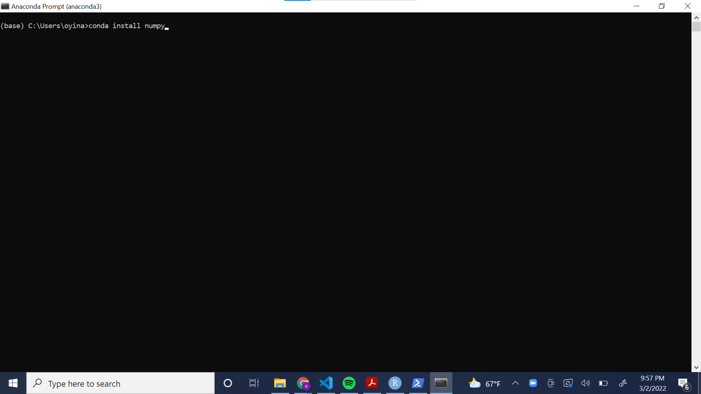

Chapter 1 Basics
This chapter covers the very basics of Python and R.
1.1 Math
Mathematical operators are the same in both languages except for exponents, integer division, and remainder division (modulo).
1.2 Missing values
Python and R represent missing values differently, and the distinction is worth keeping in mind, as missing values appear throughout this book—some code examples intake or output data that are entirely or partially missing. In Python, a standard indicator for a missing value in a data set is NaN. In R, missing values are generally indicated by NA. NaN does appear in R as well, but R reserves NaN to indicate values that, while not technically absent, are undefined and/or can’t be represented with numbers (e.g., Inf/Inf).
1.3 Assignment
Python uses = for assignment, while R can use either = or <- for assignment. The latter “assignment arrow” is preferred in most R style guides to distinguish between assignment and setting the value of a function argument. According to R’s documentation, “The operator <- can be used anywhere, whereas the operator = is only allowed at the top level (e.g., in the complete expression typed at the command prompt) or as one of the subexpressions in a braced list of expressions.” (See ?assignOps in R.)
1.4 Printing a value
To see the value of an object created via assignment, you can simply enter the object name in the console and hit enter in both Python and R. It is common in Python, however, to explicitly use the print() function.
1.5 Packages
User-created functions can be bundled and distributed as packages. Packages need to be installed only once. Thereafter they’re “imported” (Python) or “attached” (R) in each new session when needed.
Packages with large user bases are often updated to add functionality and to fix bugs. The updates are not automatically installed. Staying apprised of library/package updates can be challenging. To stay up to date, you might consider signing up for newsletters, following developers on Twitter, or periodically checking to see what updates are available.
Packages often depend on other packages. These are known as “dependencies.” Packages are sometimes updated to accommodate changes to other packages they depend on.
Python
When you download Python, you gain access to the Python Standard Library. This library includes several data types and functions for storing data, performing mathematical operations, and beyond. Commonly used data types include lists and ranges. As you can see below, you do not need to import data types from the Python Standard Library.
[0, 1, 2, 3, 4]Libraries contain modules—groups of functions. To use functions from modules in the Python Standard Library, users must import the appropriate module. Examples include math and itertools.
2.0Users can also download hundreds of libraries outside of the Python Standard Library. Python libraries are also called packages. Popular libraries include NumPy, which provides functions for operating on arrays/vectors, and pandas, which provides functions for data analysis. The following code gives an example of importing a Python library, NumPy, into a Python script, and using one of its functions to create an array (a data structure discussed in Chapter 2).
[1 2 3]To use Python libraries outside the Python Standard Library, you must install them. Package managers help shepherd along the process. Anaconda, for example, is a popular distribution of Python that includes a package manager called conda. Anaconda allows you to use and create Python environments and install libraries to these environments. A Python virtual environment is a collection of libraries isolated from other virtual environments. These environments allow users to seamlessly organize programming projects.
You can download Anaconda from the following link: https://www.anaconda.com/products/individual. When you download Anaconda, you have access to the Anaconda Navigator, a graphical user interface, and the Anaconda Prompt, a command prompt. Anaconda comes with an automatic environment called “base.”
The following screenshot illustrates how to install a library to an environment using the Anaconda GUI. Using the drop down menu, navigate to “Not installed.” Then, select the desired library from the list. You can use the search bar to search for libraries by name. Finally, click the green “Apply” button to install the package.
The following screenshot illustrates how to install a library to the “base” environment using the Anaconda Command Prompt.

Sometimes, the commands to download libraries are not as simple as in the example above. The Anaconda website provides commands for how to download popular Python libraries.
R
The main repository for R packages is the Comprehensive R Archive Network (CRAN). Another major repository is Bioconductor, which hosts packages for working with genomic data. Many packages are also distributed on GitHub.
To install packages from CRAN use the install.packages() function. In RStudio, you can also go to Tools…Install Packages… to bring up a dialog box that will auto-complete package names as you type.
# Install the vcd package, a package for Visualizing Categorical Data
install.packages("vcd")
# Load the package
library(vcd)
# See which packages on your computer have updates available
old.packages()
# Download and install available package updates;
# Set ask = TRUE to verify installation of each package
update.packages(ask = FALSE)To install R packages from GitHub, use the install_github() function from the devtools package. You need to include the username of the repo owner followed by a forward slash and the name of the package. Typing two colons between a package and a function in the package allows you to use that function without attaching the package in your R environment. That’s how we access install_github() in the example below.
When installing package updates, you will occasionally be asked, “Do you want to install from sources the package(s) which need(s) compilation?” R packages on CRAN are compiled for Mac and Windows operating systems. That can take a day or two after a package has been submitted to CRAN. If you try to install a package that has not yet been compiled, you’ll be asked the question above. If you click Yes, R will try to compile the package on your computer. This will only work if you have the required build tools on your computer. For Windows, this means having Rtools installed. Mac users should already have the necessary build tools. Unless you absolutely need the latest version of a package, it’s generally fine to click No.
1.6 Logic
Python and R share the same relational operators for making comparisons:
==(equals)!=(not equal to)<(less than)<=(less than or equal to)>(greater than)>=(greater than or equal to)
Likewise they share the same operators for logical AND and OR:
&(AND)|(OR)
However R also has && and || operators for programming control-flow. These evaluate left to right, proceeding only until the result is determined. For example, the last comparison below is not evaluated because one of the first two comparisons is TRUE. A result of TRUE is returned even though the object xxx does not exist.
[1] TRUEPython and R have different operators for negation. Python uses not. R uses !.
Python
Python’s relational operators can be used to compare arrays to single values or other arrays. The following operation returns an NumPy array containing True and False values.
array([ True, True, False, False, False, True])array([False, True, True, False, False, False])We can make multiple comparisons with the and and or operators. An important thing to note is that the and operator is inclusive, meaning that all statements must be true to return True. The or operator is exclusive, meaning that just one of the statements joined by or must be true to return True.
FalseTrueTrue and False have numeric values of 1 and 0, respectively. This allows us to sum and average these values.
20.3333333333333333R
R’s relational operators allow comparisons between a vector and a single value, or comparisons between two vectors. The result is a vector of TRUE/FALSE values.
[1] TRUE TRUE FALSE FALSE FALSE TRUE[1] FALSE TRUE TRUE FALSE FALSE FALSEComparisons with NA (a missing value) return NA.
[1] TRUE TRUE FALSE NA FALSE TRUEMultiple comparisons can be made with the AND (&) and OR (|) operators.
[1] FALSE TRUE TRUE FALSE FALSE TRUE[1] TRUE FALSE FALSE TRUE TRUE FALSETRUE/FALSE values in R have numeric values of 1 and 0, respectively. This allows us to sum and average them. (An average of 0 and 1 values is the proportion of 1’s.)
[1] 2[1] 0.3333333The ! operator indicates negation. This allows us to check whether something is not TRUE.
[1] FALSE FALSE TRUE TRUE TRUE TRUESee the ?Comparison and ?Logic help pages for more information.
1.7 Generating a sequence of values
In Python, one option for generating a sequence of values is arange() from NumPy. In R, a common approach is to use seq(). The sequences can be incremented by indicating a step argument in arange() or a by argument in seq(). Be aware that the end of the start/stop interval in arange() (Python) is open, but both sides of the from/to interval in seq() (R) are closed.
1.8 Calculating means and medians
The NumPy Python library has functions for calculating means and medians, and base R has functions for doing the same.
1.9 Writing your own functions
Python and R allow and encourage users to create their own functions. Functions can be created, named, and stored in memory for use throughout a session. Or they can be created on-the-fly “anonymously” and used once.
Python
Functions in Python are defined by using the def keyword followed by the intended name of the function with its arguments inside parentheses. We must include a return() statement after the body of our function to indicate the end of the function. The return statement takes an optional argument in its parentheses that will be the output of the function. Below, we create a function called SEM() to calculate the standard error of a mean (SEM).
def SEM(x):
import numpy as np # including the import statement inside the function ensures that NumPy is always imported
s = x.std(ddof = 1) # standard deviation of the data, specifying delta degrees of freedom as 1 (this makes denominator of the SD calculation n-1 instead of n)
n = x.shape[0] # extract the length of the input array
sem = s / np.sqrt(n) # calculate the SEM
return(sem) # return the calculated SEM valueNow, let’s try our function out on some test data.
0.7412035591181296Functions often have built-in error-checking that returns messages describing the error. Below, we modify the SEM() function to include a simple error-check to ensure that the argument passed to the function is numeric.
def SEM(x):
import numpy as np
if np.issubdtype(x.dtype,np.number)==False:
raise ValueError("Data must be numeric")
s = x.std(ddof=1)
n = x.shape[0]
sem = s / np.sqrt(n)
return(sem) Python functions can return more than one result. In such cases, the results are output as a tuple. Data structures are discussed at length in Chapter 2, but as a brief introduction: A tuple is a data structure similar to a list, but it is immutable—we cannot change the order of or modify the entries. Below, we further modify the SEM() function to make it return both the mean and the SEM of our data.
R
Functions in R can be created and named using function(). Add arguments inside the parentheses. Functions with multiple lines are wrapped in curly braces: {}. By default, the last line of the function is returned as the output; however, a result(s) can be returned before the final line via the return() function.
Below, we create a function called sem() to calculate the standard error of a mean (as we did in Python above). The function takes one argument, x, a vector of numbers. Both the function name and argument name(s) can be whatever we like as long as they follow R’s naming conventions.
Now, we can try it out on some test data.
[1] 0.7412036Functions that will be used on different data and/or by different users often need built-in error-checking to return informative error messages. This simple example checks if the data are not numeric and returns a custom error message if they are not.
sem <- function(x) {
if (!is.numeric(x)) stop("x must be numeric")
s <- sd(x)
n <- length(x)
s / sqrt(n)
}
sem(c(1, 4, 6, "a"))Error in sem(c(1, 4, 6, "a")): x must be numericR functions can also return more than one result. Below, we return a list that holds the mean and SEM of input data. We could also return a vector, a data frame, or other data structure. Notice we also add an additional argument to the function, ..., known as the three dots argument. This allows us to pass arguments for sd and mean directly through our own function. We pass through the additional argument na.rm = TRUE to drop missing values from the input data.
sem <- function(x, ...) {
if (!is.numeric(x)) stop("x must be numeric")
s <- sd(x, ...)
n <- length(x)
se <- s / sqrt(n)
mean <- mean(x, ...)
list(mean = mean, SEM = se)
}
d <- c(1, 4, 6, 8, NA, 4, 4, 8, 6)
sem(d, na.rm = TRUE)$mean
[1] 5.125
$SEM
[1] 0.7855339Functions can also be created on-the-fly as “anonymous” functions. This simply means the functions are not saved as objects in memory. These are often used with R’s family of apply() functions, which apply some function over a set of inputs. As before, the functions can be created with function(). We can also use the backslash \ as a shorthand for function(). We demonstrate both below using the following example data.
# Generate some example data
d <- data.frame(x1 = c(3, 5, 7, 1, 5, 4), x2 = c(6, 9, 8, 9, 2, 5), x3 = c(1, 9, 9, 7, 8, 4))
d x1 x2 x3
1 3 6 1
2 5 9 9
3 7 8 9
4 1 9 7
5 5 2 8
6 4 5 4Say we want to find the standard error of the mean for the three columns using an anonymous function with lapply(). The “l” in lapply() means the result will be a list. The function is applied to each column of the data frame.
$x1
[1] 0.8333333
$x2
[1] 1.118034
$x3
[1] 1.308094We can also use the backslash as a shorthand for function().
$x1
[1] 0.8333333
$x2
[1] 1.118034
$x3
[1] 1.308094